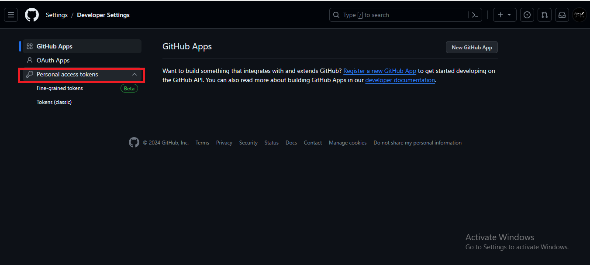
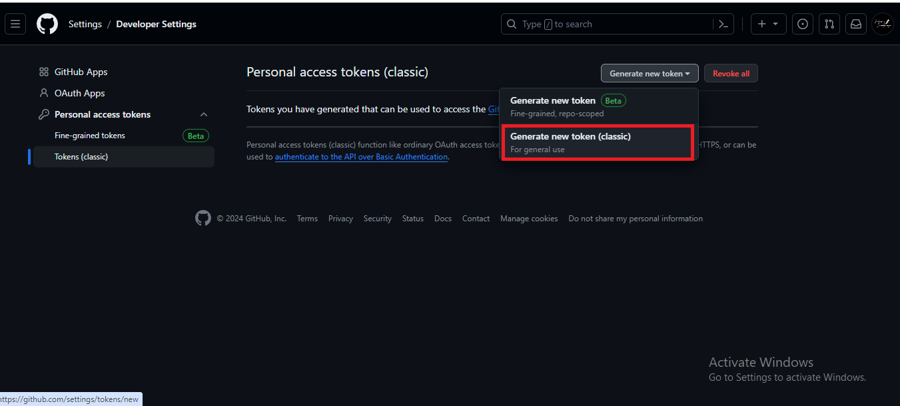
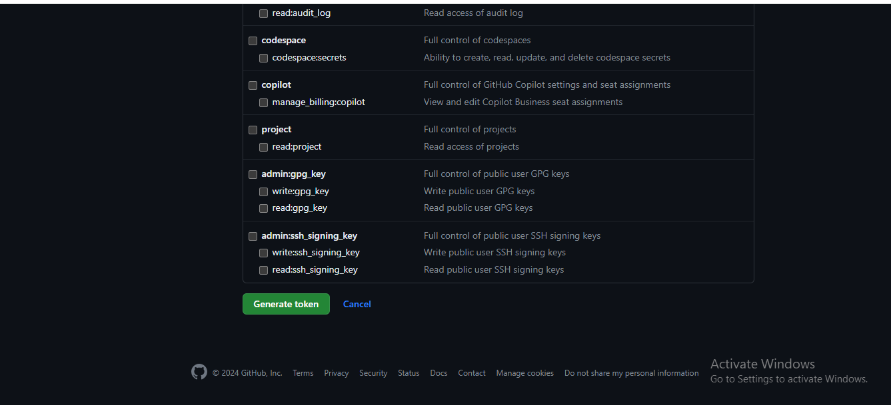

Github telah mengumumkan perubahan pada keamanan penting pada 13 Agustus 2021, dengan mencabut dukungan untuk masuk menggunakan kata sandi.
Sebagai solusinya, Github menghadirkan metode baru yang lebih aman dan efisien dengan memperkenalkan penggunaan
Untuk membantu anda memahami perubahan ini secara mendalam, berikut adalah panduan langkah demi langkah, dengan penekanan pada beberapa poin kunci :
-
Goto settings of Github Account
Melalui keputusan ini, GitHub bertujuan untuk meningkatkan keamanan akun pengguna. Penggantian kata sandi dengan token meminimalkan risiko terkait dengan kebocoran atau penggunaan kata sandi yang lemah.
-
Find and Select Developer Settings
Pertama-tama, akses halaman pengaturan akun GitHub Anda. Di sana, temukan dan pilih opsi "Developer Settings". Langkah ini akan membuka akses ke pengaturan teknis yang relevan. -
Find and Select Personal Access Tokens
Dalam "Developer Settings", pilih opsi "Personal Access Tokens". Ini adalah titik fokus untuk menciptakan dan mengelola kunci pengganti kata sandi Anda.  -
Generate a new token
Klik untuk membuat token baru. Saat melakukannya, akan muncul formulir yang memungkinkan Anda memberikan detail spesifik mengenai token ini.  -
Fill in any note and select the access scopes
Selama proses pembuatan token, isi catatan yang jelas dan pilih akses skop yang sesuai dengan kebutuhan Anda. Ini memastikan token hanya memiliki hak akses yang diperlukan.  -
Once done click on generate tokens
Setelah formulir diisi, klik tombol untuk menghasilkan token baru. GitHub akan memberikan token unik yang harus dijaga kerahasiaannya sebagaimana mestinya. -
Use the generated token in place of a password to communicate with Github
Gunakan token yang baru dibuat sebagai pengganti kata sandi. Token ini akan berfungsi sebagai kunci keamanan yang memungkinkan Anda berinteraksi dengan GitHub tanpa kebutuhan kata sandi tradisional.
Dengan mengikuti langkah-langkah ini, Anda akan meningkatkan keamanan akun GitHub Anda dan pada saat yang sama, menjadikan proses ini lebih mudah dipahami, terutama bagi mereka yang baru memasuki dunia GitHub. Ingatlah untuk menjaga kerahasiaan token Anda dan tidak membagikannya dengan orang lain untuk menjaga keamanan akun Anda.